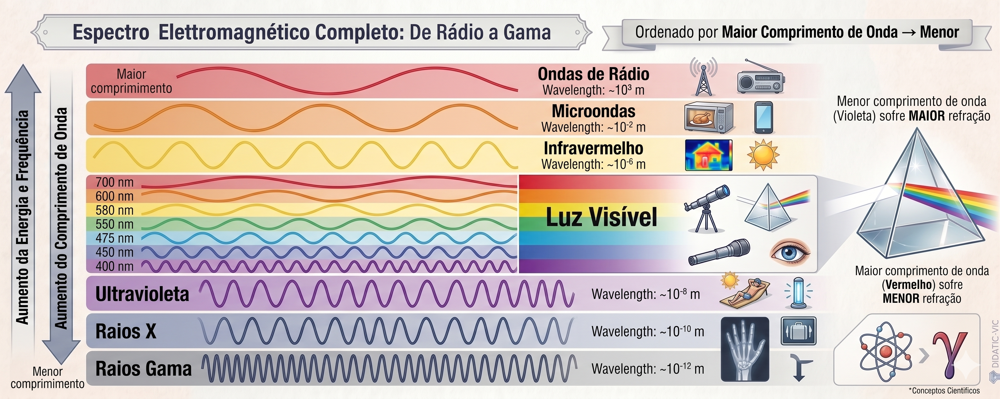
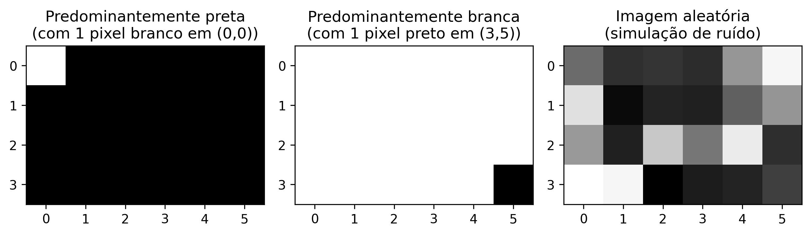
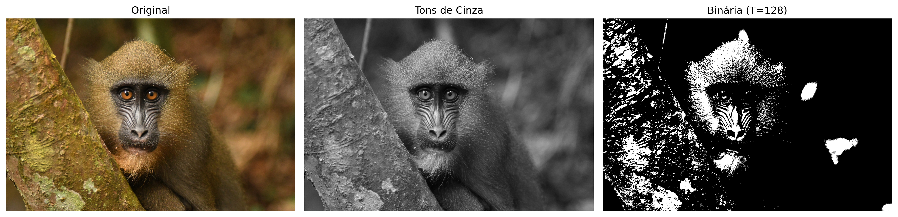

Este capítulo inaugura la Parte 1 del libro, dedicada a los fundamentos del Procesamiento Digital de Imágenes (PDI). Se presentan la representación matemática de imágenes digitales y los principales métodos para su manipulación.
Se utiliza el lenguaje C++ y la biblioteca morph.hpp, un puerto didáctico de morph.py (ZAMPIROLLI, 2025).
1.1 Objetivos
Al final de este capítulo, usted será capaz de:
Comprender la naturaleza física y matemática de la imagen digital \(f(x,y)\).
Identificar las bandas del espectro electromagnético relevantes para PDI.
Realizar operaciones básicas: lectura, visualización y guardado de imágenes.
Acceder y modificar intensidades de píxeles individualmente.
Aplicar umbralización manual.
Configurar el entorno de desarrollo en C++.
Manipular estructuras de matrices (std::vector) sin caer en trampas de copia/referencia.
1.2 Antes de comenzar: Notebooks interactivos
Este material fue construido bajo el concepto de Literate Programming (Programación Literaria), ideado por Donald Knuth en la década de 1980 (KNUTH, 1984). Knuth —también creador del sistema TeX para tipografía digital— propuso que los programas se escribieran como una narrativa lógica para los seres humanos, intercalando código y documentación.
Para ejecutar una celda, presione Shift + Enter o haga clic en el botón ▶️.
NotaNota sobre el formato
En las versiones renderizadas (PDF o HTML), el código se presenta en bloques estáticos con fines de lectura y referencia. La ejecución interactiva requiere el acceso a través de Google Colab (disponible en la parte superior de la página) o en un entorno local mediante VSCode o Jupyter Notebook.
1.3 Fundamentos
El estudio de sistemas basados en imágenes comprende un ecosistema de disciplinas integradas que transforman datos visuales brutos en conocimiento estructurado. Mientras algunas áreas se centran en la generación de representaciones, otras se dedican al tratamiento y análisis de estos datos para respaldar aplicaciones tecnológicas complejas.
El diagrama presentado en el Figura 1.1 establece la distinción y complementariedad entre el Procesamiento Digital de Imágenes (PDI) y la Visión por Computador (VC). El PDI, destacado en verde, se centra en la transformación de imagen a imagen, con el objetivo de mejorar la calidad o realizar un preprocesamiento, como la eliminación de ruidos y el realce de contraste.
En contraste, la VC, señalada en azul, se centra en la interpretación del contenido visual para extraer modelos o información, como el reconocimiento de objetos y gestos. La región de intersección ilustra la sinergia entre las áreas, donde el PDI prepara los datos visuales para la interpretación por parte de la VC. El mapa también demuestra las interconexiones de ambas disciplinas con áreas como Robótica, Computación Gráfica, Inteligencia Artificial (IA) y Neurociencia.
Figura 1.1: Diagrama relacional que detalla las distinciones fundamentales, sinergias e interconexiones entre PDI y VC en el contexto de sistemas basados en imágenes.
1.3.1 👁️ Visión por Computador
Enfoque:Imagen → Modelo (camino inverso de la Computación Gráfica).
Objetivo: Extraer información de alto nivel a partir de imágenes o videos.
Aplicaciones típicas:
Robótica: detección de obstáculos, localización y navegación autónoma.
Vigilancia e inspección: reconocimiento de eventos, lectura de placas, control de calidad.
Teledetección: análisis de imágenes satelitales, cartografía ambiental.
Imágenes médicas: detección de tumores, segmentación de órganos, ayuda al diagnóstico.
Interacción humano-computador: reconocimiento de gestos, expresiones faciales, seguimiento ocular.
Relación con otras áreas: utiliza técnicas de Aprendizaje Automático e IA para clasificar e interpretar escenas; sirve como “ojos” de la Robótica.
1.3.2 🖼️ Procesamiento Digital de Imágenes (PDI)
Enfoque:Imagen → Imagen (generalmente: transformación de una imagen en otra).
Objetivo: Mejorar la calidad visual o extraer características de bajo nivel.
Aplicaciones comunes:
Eliminación de ruido (filtros de media, mediana, gaussiano).
Mejora del contraste (ecualización de histograma, ajuste gamma).
Detección de bordes (Sobel, Canny, Laplaciano).
Segmentación (umbralización, crecimiento de regiones, watershed).
Transformaciones geométricas (redimensionamiento, rotación, corrección de perspectiva).
Es la base de la mayoría de los sistemas de VC (preprocesamiento).
La Computación Gráfica aplica frecuentemente PDI para posprocesamiento (ej.: suavizado, realce).
Las técnicas de IA pueden optimizar parámetros de procesamiento (ej.: aprendizaje de filtros).
Tabla 1.1: Conexión entre PDI, VC y otras áreas de la ciencia.
Área
Relación con PDI y VC
Inteligencia Artificial
Proporciona modelos (redes neuronales, SVM) que interpretan salidas de la VC.
Robótica
Consume datos de VC para tomar decisiones (navegación, manipulación).
Aprendizaje Automático
Utiliza descriptores extraídos por PDI/VC para entrenar clasificadores.
Computación Gráfica
Camino inverso: modelo → imagen; muchas veces aplica PDI para renderizado realista.
Neurociencia
Inspira modelos de PDI (ej.: filtros similares a células ganglionares de la retina).
1.4 Etapas del PDI
Las etapas del PDI se presentan en la Figura 1.2, que pueden comprenderse como una cadena de transformaciones que reduce la redundancia de los datos en busca de significado:
Bajo Nivel: Actúa directamente sobre los píxeles de la imagen ruidosa para realizar mejoras y filtrados, generando como salida una imagen limpia o realzada.
Nivel Medio: Recibe la imagen tratada y realiza la segmentación y descripción, transformando la matriz de píxeles en atributos estructurados (forma, tamaño y textura).
Alto Nivel: Utiliza la tabla de atributos para alimentar procesos de lógica e inteligencia artificial, resultando en la decisión o reconocimiento final (como el diagnóstico médico).
Figura 1.2: Representación del flujo secuencial de procesamiento: la salida de cada nivel se convierte en la entrada del nivel subsiguiente.
A Figura 1.3 detalla la secuencia completa del PDI, desde la captura hasta la interpretación. El flujo comienza en la Adquisición de la Imagen (1) y prosigue con el Mejoramiento (2) y la Restauración (3). A continuación, el contenido se aísla mediante la Segmentación (4) y se refina con la Morfología (5). La transición crucial ocurre en la Representación y Descripción (6), donde los objetos visuales se convierten en datos matemáticos (área, perímetro, etc.), lo que permite el Reconocimiento (7). Los procesos auxiliares incluyen el Procesamiento de Imagen en Color y la Compresión, que contribuyen a la eficiencia del almacenamiento y del análisis.
Figura 1.3: Flujo detallado del PDI: desde la adquisición sensorial hasta la extracción de atributos y el reconocimiento automatizado, incluyendo el procesamiento en color y la compresión.
1.5 Formación de la Imagen y el Espectro
El proceso de formación de una imagen se fundamenta en la interacción entre la materia y la energía radiante. Esencialmente, una imagen se concibe cuando un sensor registra la radiación resultante de la interacción con un objeto físico. En el contexto de la visión humana y de la fotografía convencional, este fenómeno depende de una fuente de luz que ilumine la escena; las características de los objetos se codifican entonces a través de las variaciones de intensidad y color de la luz que alcanza el sensor, tal como se ilustra en la Figura 1.4.

Figura 1.4: Representación del espectro visible y su posición en relación con las demás radiaciones electromagnéticas, destacando la variación de las longitudes de onda de 380 nm a 750 nm.
La luz visible ocupa solo una pequeña franja del espectro electromagnético — entre 380 nm (violeta) y 750 nm (rojo) — según se ilustra en Figura 1.5.. Los sensores digitales convencionales operan en esa misma ventana, pero los equipos especializados pueden captar radiaciones invisibles al ojo humano, como el infrarrojo y los rayos X. En PDI, la imagen formada depende directamente de la sensibilidad espectral del sensor utilizado.
Figura 1.5: (A) Espectro electromagnético completo en escala logarítmica, con énfasis en el rango visible. (B) Detalle de la luz visible (380-750 nm) y sus colores. (C) Descomposición de la luz blanca por el prisma: la menor longitud de onda sufre mayor refracción, separando UV, visible e infrarrojo.
A partir de ese proceso físico de adquisición, se vuelve posible modelar matemáticamente la imagen digital como una función bidimensional discreta, en la cual cada punto de la escena está representado por muestras numéricas de intensidad luminosa, formalizando así los conceptos de píxel y de imagen digital presentados en la siguiente sección.
1.6 ¿Qué es una Imagen Digital?
Una imagen digital está formada por una cuadrícula de píxeles (Picture Elements), donde cada píxel es la unidad elemental más pequeña de la imagen.
Tip¿Qué es un Píxel?
Un píxel es la unidad direccionable más pequeña que compone una imagen digital. Cada píxel ocupa una posición única en la cuadrícula y almacena uno o más valores numéricos que representan su intensidad o color.
Representación Matemática
A diferencia de una función continua, el dominio de una imagen digital es un plano rectangular finito \(\mathbb{E} \subset \mathbb{Z}^2\), que representa la cuadrícula de muestreo. Este dominio está indexado por coordenadas enteras:
\[
\mathbb{E} = \{ (x, y) \in \mathbb{Z}^2 \mid 0 \le x < L,\; 0 \le y < H \}
\tag{1.1}\]
Donde:
\(L\): representa el ancho de la imagen (número de columnas).
\(H\): representa la altura de la imagen (número de filas).
La imagen digital es una función que asocia cada par de coordenadas \((x,y)\) a uno o más valores que describen la apariencia del píxel.
\[
f: \mathbb{E} \to \mathcal{V}
\tag{1.2}\]
El conjunto \(\mathcal{V}\) define los valores posibles para el píxel (codominio), variando según el tipo de imagen, como se demuestra en la Tabla 1.2.
Tabla 1.2: Principales tipos de imagen digital y sus respectivos conjuntos de valores posibles para cada píxel.
Tipo de imagen
\(\mathcal{V}\) (valores del píxel)
Representación
Binaria
\(\{0, 1\}\) o \(\{0, 255\}\)
⬛◻️
Escala de grises
\(\{0, 1, \dots, 255\}\)
░▒▓█
Color (RGB)
\(\{0, \dots, 255\}^3\) (triplas ordenadas de valores)
🟥🟩🟦
Ejemplo práctico: Una imagen a color en el modelo RGB puede representarse matemáticamente mediante una función que asocia tres valores de intensidad a cada píxel. Computacionalmente, esta representación corresponde a tres matrices superpuestas — los canales rojo (Red), verde (Green) y azul (Blue) — en las cuales cada elemento almacena la intensidad luminosa del respectivo canal en una posición determinada de la imagen.
Para viabilizar os experimentos prácticos de PDI e VC, este libro utiliza C++17 y un conjunto mínimo de bibliotecas orientadas a la manipulación matricial, al procesamiento de imágenes y a la visualización de resultados, presentadas a continuación.
1.7 Configuração do Ambiente
Este material utiliza C++17 e a biblioteca de cabeçalho único morph.hpp, originalmente proposta para Python em Zampirolli (2025). Aqui, é utilizada uma versão mínima e didática da morph.py, adaptada para compilação simples com g++, conforme apresentado na Tabla 1.3.
Cada célula de código é compilada e executada como um processo isolado (%%writefile arquivo.cpp seguido de g++). Diferentemente do kernel Python, não há estado persistente entre as células: as imagens produzidas por uma célula são salvas em arquivos para serem lidas pela próxima.
Os Ejercicios de Programación (EPs) apresentados al final de los capítulos pueden ser validados por el mismo módulo testsuite.py utilizado en la ruta Python, que compila la solución con g++ y compara su salida con los casos de prueba. Así, los mismos casos de prueba (.cases) pueden validar soluciones en C++, Python y otros lenguajes, tanto en los notebooks como en el Moodle/VPL.
Tabla 1.3: Principales bibliotecas y herramientas utilizadas en la ruta C++ de este libro.
Biblioteca / Herramienta
Función principal
g++ (C++17)
Compilación de cada celda de código
morph.hpp
Abstracción didáctica de operaciones de PDI
stb_image.h / stb_image_write.h
Lectura/escritura de PNG/JPEG (sin OpenCV)
testsuite.py
Ejecución y validación automática de los EPs
1.8 Sobre el morph.hpp
La morph.hpp es una versión C++ mínima y didáctica de la morph.py: implementa las funciones usadas en este capítulo (read, gray, randomImage, show, write, threshold, drawImg), además de operaciones de morfología (dil/ero y variantes dil0/ero0/dil1/ero1) preparadas para los capítulos siguientes. No hay paridad numérica garantizada con la implementación Python — el criterio es “compila y produce una imagen plausible”, no “resultado bit a bit idéntico al Python”.
Las bibliotecas stb_image.h/stb_image_write.h (dominio público/MIT) están vendorizadas junto al repositorio — es decir, su código fuente ya viene copiado dentro del propio proyecto, en lugar de instalado separadamente mediante apt install — lo que evita depender de paquetes del sistema durante la compilación en Colab. Las operaciones dil()/ero() usan cv::dilate/cv::erode cuando se compilan con -DMM_USE_OPENCV; sin esa flag (por defecto, incluso en Moodle/VPL), se recurre a la versión didáctica equivalente (dil1/ero1) sin requerir OpenCV.
import os, urllib.requestos.makedirs("tmp/state", exist_ok=True) # artefatos de build del trayecto C++ (.cpp, binario, PNGs)url ="https://raw.githubusercontent.com/fzampirolli/pdi-vc/master/morph/config.py"ifnot os.path.exists("config.py"): urllib.request.urlretrieve(url, "config.py")# El kernel es Python incluso en el trayecto C++: `mm` (morph.py) es usado por los# simuladores, por la exhibición de las figuras que el binario C++ genera y por el# estado mm::Image entre celdas. cpp=True descarga también el trayecto compilado# (morph.hpp + stb_image*.h), usado en el #include de las celdas %%writefile *.cpp.import configconfig.setup(testsuite=True, cpp=True)from morph import mmfrom testsuite import TestSuite
1.9 Fundamentos de Matrices — atención a la copia de referencias
Como una imagen digital puede representarse mediante una matriz, es importante comprender cómo crear y manipular matrices correctamente. En C++, std::vector tiene semántica de valor: copiar el vector copia sus datos. Por ello, std::vector<std::vector<int>> m(3, std::vector<int>(2, 0)) crea de hecho tres filas independientes — el constructor de relleno copia la fila modelo tres veces.
AdvertenciaAtención a la copia de referencias
La trampa aparece cuando se usan punteros o referencias en lugar de copias. En std::vector<int> linha(2, 0); std::vector<std::vector<int>*> m(3, &linha);, los tres elementos de m apuntan a la misma fila, y modificar (*m[0])[0] altera todas. Lo mismo ocurre con auto& linha = m[0]; (referencia — modifica la matriz), en contraste con auto linha = m[0]; (copia — deja la matriz intacta).
Para visualizar este comportamiento, se puede ejecutar el código en Python Tutor (que también ejecuta C++ paso a paso) y comparar el efecto de copias y de referencias.
En la práctica, para el procesamiento digital de imágenes (PDI), se utiliza la estructura mm::Image de la morph.hpp, que también tiene semántica de valor: mm::Image b = a; copia los píxeles, mientras que mm::Image& b = a; crea solo un alias para la misma imagen. El siguiente código presenta diferentes formas de creación de imágenes sintéticas, cuyos resultados se muestran en la Figura 1.6..
%%writefile tmp/fig_imagens_sinteticas.cpp#define MM_OUT "tmp/fig_imagens_sinteticas.png"// Compile: g++-std=c++17-O2 program.cpp -o program $(pkg-config --cflags --libs opencv4) -lm#include "morph.hpp"#include <iostream>#include <vector>#include <string>#include <filesystem>//| quarto-raw: false//| label: fig-imagens-sinteticas//| fig-cap: "Exemplos de imagens sintéticas representadas matricialmente."//| echo: true//| output: trueint main() {// Criando uma imagem preta (zeros) de 4, 6 pixels mm::Image img_preta(4, 6); img_preta.at(0, 0) =255;// pixel branco no canto superior esquerdo// Criando uma imagem branca (255) de 4, 6 pixels mm::Image img_branca(4, 6); std::fill(img_branca.data.begin(), img_branca.data.end(), 255); img_branca.at(3, 5) =0;// pixel preto no canto inferior direito// Criando uma imagem aleatória para testes (ruído) mm::Image img_random = mm::randomImage(4, 6, 255); std::cout <<"Matriz aleatória gerada:\n"; std::cout << mm::drawImg(img_random) <<"\n"; mm::show( std::vector<mm::Image>{img_preta, img_branca, img_random}, MM_OUT, std::vector<std::string>{"Predominantemente preta\n(com 1 pixel branco em (0,0))","Predominantemente branca\n(com 1 pixel preto em (3,5))","Imagem aleatória\n(simulação de ruído)" },3 );// [pdi:panel-io] auto-generated — do not edit by handstd::filesystem::create_directories("tmp");mm::write(img_preta, "tmp/fig_imagens_sinteticas_0.png");mm::write(img_branca, "tmp/fig_imagens_sinteticas_1.png");mm::write(img_random, "tmp/fig_imagens_sinteticas_2.png");// [pdi:panel-io:end]return0;}
Overwriting tmp/fig_imagens_sinteticas.cpp
!g++-I. -std=c++17 tmp/fig_imagens_sinteticas.cpp -o tmp/fig_imagens_sinteticas \&& ./tmp/fig_imagens_sinteticas \&& test -f "tmp/fig_imagens_sinteticas.png"\|| echo "⚠ mm::show não gravou tmp/fig_imagens_sinteticas.png"
try: mm.show( [ mm.read("tmp/fig_imagens_sinteticas_0.png"), mm.read("tmp/fig_imagens_sinteticas_1.png"), mm.read("tmp/fig_imagens_sinteticas_2.png"), ], titles=['Predominantemente preta\n(com 1 pixel branco em (0,0))','Predominantemente branca\n(com 1 pixel preto em (3,5))','Imagem aleatória\n(simulação de ruído)', ], cols=3, axis=True, figsize=(9, 3), )exceptExceptionas _e:print("figura indisponivel nesta trilha (C++): "+repr(_e) +" tmp/fig_imagens_sinteticas_0.png (ver a versao Python)")

Figura 1.6: Exemplos de imagens sintéticas representadas matricialmente.
1.10 Leyendo y Mostrando Imágenes
En bibliotecas como OpenCV (cv::Mat), las imágenes digitales se representan computacionalmente como matrices multidimensionales. En morph.hpp, la estructura mm::Image adopta un enfoque más simple: un buffer lineal de bytes (std::vector<unsigned char>), con altura, ancho y número de canales explícitos.
Una de las operaciones fundamentales en PDI es la lectura de imágenes.
En morph.hpp, la función mm::read() permite cargar imágenes tanto de archivos locales como de URLs, como se ilustra en Figura 2.7..
!g++-I. -std=c++17 tmp/fig_01_natureza.cpp -o tmp/fig_01_natureza \&& ./tmp/fig_01_natureza \&& test -f "tmp/fig_01_natureza.png"\|| echo "⚠ mm::show não gravou tmp/fig_01_natureza.png"
Dimensões (H, W, Canais): 1365, 2048, 3
Tipo de dado: uint8
Exemplo: Captura RGB
try: mm.show(mm.read("tmp/fig_01_natureza.png"))exceptExceptionas _e:print("figura indisponivel nesta trilha (C++): "+repr(_e) +" tmp/fig_01_natureza.png (ver a versao Python)")
Figura 1.7: Mandrill (Mandrillus sphinx) em ambiente natural. Crédito: Julien Renoult (CC BY 4.0).
Alternativa: Descarga de la Imagen para Almacenamiento Local
En entornos donde la lectura directa de URLs no esté disponible —debido a restricciones de red, políticas de firewall o ausencia de conectividad— una alternativa consiste en descargar previamente la imagen al sistema de archivos local y luego cargarla con mm::read(). En la ruta de C++, mm::read también acepta URLs directamente (descarga interna vía curl/wget); esta alternativa cubre el caso de descargar una vez y reutilizar el archivo local. En el siguiente ejemplo, el archivo se guarda como mandrill.png.
wget -O mandrill.png <URL> realiza la descarga de la imagen y la almacena localmente con el nombre especificado;
mm::read("mandrill.png") efectúa la lectura del archivo directamente desde el sistema de archivos, sin necesidad de solicitudes HTTP adicionales;
esta estrategia reduce la dependencia de conectividad durante la ejecución de los experimentos y evita descargas repetidas de la misma imagen.
TipNota
El prefijo ! se utiliza en entornos basados en notebooks, como Jupyter Notebook, JupyterLab y Google Colab, para ejecutar comandos del sistema operativo directamente en celdas de código. En terminales convencionales, el comando debe utilizarse sin el prefijo !.
Si la utilidad wget no está instalada, se puede utilizar alternativamente:
Como vimos, una imagen a color en el espacio RGB se representa mediante la función:
\[
f: \mathbb{E} \to \{0,1,\dots,255\}^3
\]
Es decir, para cada píxel \((x,y)\), tenemos tres valores \((R,G,B)\) que definen su color.
Conversión a Escala de Grises
Para convertir una imagen RGB a escala de grises (grayscale), es necesario combinar los tres canales en un único valor de intensidad \(g\), que representa el brillo percibido. Como el ojo humano no es igualmente sensible al rojo, verde y azul, se utiliza una media ponderada. El estándar ITU-R BT.601 ({ITU-R}, 2011) define los siguientes pesos:
\[
g = 0.299\,R + 0.587\,G + 0.114\,B
\tag{1.3}\]
Tras el cálculo, el valor \(g\) se redondea al entero más cercano y se ajusta al intervalo \([0, 255]\). El resultado es una nueva imagen, ahora en escala de grises, representada por:
A partir de la imagen en escala de grises \(f_{\text{gris}}(x,y)\), una operación fundamental es la umbralización, que produce una imagen binaria (solo blanco y negro). Para ello, se elige un valor de corte \(T\) (generalmente en el intervalo \([0,255]\)) y se define:
\[
f_{\text{bin}}(x,y) =
\begin{cases}
255 & \text{si } f_{\text{gris}}(x,y) > T \\[4pt]
0 & \text{en caso contrario}
\end{cases}
\tag{1.4}\]
Ejemplo: Con \(T = 128\), los píxeles con intensidad superior a 128 se vuelven blancos (255); los demás se vuelven negros (0).
La umbralización se usa ampliamente para segmentar objetos del fondo, extraer bordes o crear máscaras binarias para el procesamiento posterior.
Nota: El valor 255 representa el blanco máximo en imágenes de 8 bits, mientras que 0 representa el negro absoluto.
Ejemplo práctico de conversión y umbralización
La Figura 1.8 ilustra los principales pasos para transformar una imagen a color en escala de grises y, posteriormente, convertirla en una imagen binaria mediante umbralización. El siguiente código implementa estas etapas:
%%writefile tmp/fig_01_processamento_basico.cpp#define MM_OUT "tmp/fig_01_processamento_basico.png"#include "morph.hpp"#include <iostream>#include <filesystem>int main() {// [pdi:state-io] auto-generated — do not edit by handmm::Image img = mm::_read_state("tmp/state/img_34.png");// [pdi:state-io:end]//1. Converter para Tons de Cinza mm::Image img_gray = mm::gray(img);//2. Aplicar limiar (Pixels >128 tornam-se 255, outros 0)int limiar =128; mm::Image img_binaria = mm::threshold(img_gray, limiar);// Uso da nova função mm::show( std::vector<mm::Image>{img, img_gray, img_binaria}, MM_OUT, std::vector<std::string>{"Original", "Tons de Cinza", "Binária (T="+ std::to_string(limiar) +")"},3 );// [pdi:state-io] auto-generated — do not edit by handstd::filesystem::create_directories("tmp/state");mm::write(img_gray, "tmp/state/img_gray_38.png");// [pdi:state-io:end]// [pdi:panel-io] auto-generated — do not edit by handstd::filesystem::create_directories("tmp");mm::write(img, "tmp/fig_01_processamento_basico_0.png");mm::write(img_gray, "tmp/fig_01_processamento_basico_1.png");mm::write(img_binaria, "tmp/fig_01_processamento_basico_2.png");// [pdi:panel-io:end]return0;}
Overwriting tmp/fig_01_processamento_basico.cpp
!g++-I. -std=c++17 tmp/fig_01_processamento_basico.cpp -o tmp/fig_01_processamento_basico \&& ./tmp/fig_01_processamento_basico \&& test -f "tmp/fig_01_processamento_basico.png"\|| echo "⚠ mm::show não gravou tmp/fig_01_processamento_basico.png"
[1] Original
[2] Tons de Cinza
[3] Binária (T=128)
try: mm.show( [ mm.read("tmp/fig_01_processamento_basico_0.png"), mm.read("tmp/fig_01_processamento_basico_1.png"), mm.read("tmp/fig_01_processamento_basico_2.png"), ], titles=['Original','Tons de Cinza','Binária (T=128)', ], cols=3, )exceptExceptionas _e:print("figura indisponivel nesta trilha (C++): "+repr(_e) +" tmp/fig_01_processamento_basico_0.png (ver a versao Python)")

Figura 1.8: Processamento básico de imagens: (a) imagem original, (b) imagem em tons de cinza, (c) imagem binarizada por limiar (T=128).
1.12 Umbralización por el método de Otsu
Tal como se presentó en la Ecuación 1.4, la umbralización convierte una imagen en tonos de gris a binaria usando un valor de corte \(T\). Hasta ahora fijamos \(T = 128\) manualmente.
Sin embargo, la elección manual de \(T\) no siempre es trivial. La biblioteca mm ofrece una alternativa automática: cuando el umbral no se proporciona, la función mm::threshold(img_gris) calcula el valor de \(T\) mediante el método de Otsu (OTSU, 1979). Este método, que se detallará en capítulos futuros, maximiza la varianza entre clases del histograma (frecuencia de cada tono de gris), separando automáticamente los píxeles de objeto y fondo.
El código siguiente compara la umbralización manual (\(T=128\)) con la automática (Otsu). La binarización por Otsu se realiza con mm::threshold(img_gris); dado que la API mínima de morph.hpp no devuelve el \(T\) calculado, el valor mostrado en la etiqueta de la figura se recupera con cv2.threshold en la etapa de visualización (mismo algoritmo, mismo \(T\)).
%%writefile tmp/fig_01_otsu.cpp#define MM_OUT "tmp/fig_01_otsu.png"//| quarto-raw: false//| label: fig-01-otsu//| fig-cap: "Comparação entre limiarização manual (T=128) e automática (Otsu) sobre a imagem em tons de cinza."//| echo: true//| output: true#include "morph.hpp"#include <iostream>#include <vector>#include <string>#include <filesystem>int main() {// [pdi:state-io] auto-generated — do not edit by handmm::Image img_gray = mm::_read_state("tmp/state/img_gray_38.png");// [pdi:state-io:end]// Limiarização com T fixo (manual)int T_fixo =128; mm::Image img_bin_fixo = mm::threshold(img_gray, T_fixo);// Limiarização pelo método de Otsu (T automático)int T_otsu = mm::otsu(img_gray); mm::Image img_bin_otsu = mm::threshold(img_gray);// mesmo T, Otsu quando o argumento é omitido std::cout <<"Limiar calculado por Otsu: T = "<< T_otsu <<"\n";// ou simplesmente:// img_bin_otsu = mm::threshold(img_gray);// Exibição lado a lado mm::show( std::vector<mm::Image>{img_gray, img_bin_fixo, img_bin_otsu}, MM_OUT, std::vector<std::string>{"Tons de Cinza", "Binária (T=128)", "Binária (Otsu, T="+ std::to_string(T_otsu) +")"},3 );// [pdi:panel-io] auto-generated — do not edit by handstd::filesystem::create_directories("tmp");mm::write(img_gray, "tmp/fig_01_otsu_0.png");mm::write(img_bin_fixo, "tmp/fig_01_otsu_1.png");mm::write(img_bin_otsu, "tmp/fig_01_otsu_2.png");// [pdi:panel-io:end]return0;}
Overwriting tmp/fig_01_otsu.cpp
!g++-I. -std=c++17 tmp/fig_01_otsu.cpp -o tmp/fig_01_otsu \&& ./tmp/fig_01_otsu \&& test -f "tmp/fig_01_otsu.png"\|| echo "⚠ mm::show não gravou tmp/fig_01_otsu.png"
Limiar calculado por Otsu: T = 95
[1] Tons de Cinza
[2] Binária (T=128)
[3] Binária (Otsu, T=95)
Figura 1.9: Comparação entre limiarização manual (T=128) e automática (Otsu) sobre a imagem em tons de cinza.
La Figura 1.9 muestra que el umbral obtenido por Otsu se adapta automáticamente a la imagen, resultando en una binarización más eficiente que un valor fijo, especialmente cuando las intensidades del objeto y del fondo están bien separadas en el histograma. Esta técnica es ampliamente utilizada en sistemas de VC para la binarización de documentos, detección de objetos y preprocesamiento de imágenes.
morph.hpp abstrae toda esa complejidad: basta con llamar a mm::threshold(img_gray). El umbral de Otsu se calcula automáticamente y la imagen binaria se devuelve directamente. Este enfoque permite concentrarse en el concepto, no en los detalles de implementación.
1.13 Acceso a Píxeles
En morph.hpp, la imagen es un mm::Image con un buffer lineal data (fila tras fila, canales intercalados) y el método at(y, x, c) para acceso individual, siguiendo la convención matricial fila (eje Y) y columna (eje X): img.at(fila, columna) para tonos de gris y img.at(fila, columna, canal) para cada canal de una imagen RGB.
El código de la Figura 1.10 demuestra cómo extraer esos valores en imágenes de color (RGB) y en tonos de gris, además de aislar la vecindad inmediata del punto de interés.
# Not yet ported to this language in this version — conceptual reference in Python.# 1. Coordenadas del píxel objetivo (fila, columna)r, c =600, 800# 2. Acceso directo a los valores del píxelpixel_cinza = img_gray[r, c]print(f"Píxel objetivo ({r}, {c}):")print(f" Tons de gris (escalar) : {pixel_cinza}")print(f" Color (canales RGB) : R={img[r, c, 0]}, G={img[r, c, 1]}, B={img[r, c, 2]}")# 3. Vecindario 3x3 alrededor de (r, c); el píxel central va entre corchetesprint("Matriz de vecindario 3x3 (tons de gris):")for dy inrange(-1, 2): linha =""for dx inrange(-1, 2): v = img_gray[r + dy, c + dx]if dy ==0and dx ==0: linha +=f"[{v:3d}]"else: linha +=f" {v:3d} "print(" "+ linha)# 4. Marca la posición del píxel con un cuadrado rojo hueco (borde de# 3 px) en una copia de la imagen y muestra (equivalente al punto de matplotlib).marcada = img.copy()lado =20# medio-lado del cuadrado, en píxelesesp =5# grosor del bordefor x inrange(c - lado, c + lado +1):for w inrange(esp): marcada[r - lado + w, x, 0] =255 marcada[r - lado + w, x, 1] =0 marcada[r - lado + w, x, 2] =0 marcada[r + lado - w, x, 0] =255 marcada[r + lado - w, x, 1] =0 marcada[r + lado - w, x, 2] =0for y inrange(r - lado, r + lado +1):for w inrange(esp): marcada[y, c - lado + w, 0] =255 marcada[y, c - lado + w, 1] =0 marcada[y, c - lado + w, 2] =0 marcada[y, c + lado - w, 0] =255 marcada[y, c + lado - w, 1] =0 marcada[y, c + lado - w, 2] =0mm.show(marcada, title=f"Ubicación del píxel ({r}, {c})")
Figura 1.10
Acceso a píxeles en C++ (mm::Image):
Escala de grises:img_gray.at(r, c) devuelve un unsigned char (0 a 255) con la intensidad de gris en el píxel.
RGB:img.at(r, c, 0), img.at(r, c, 1), img.at(r, c, 2) acceden a los canales R, G y B — un índice de canal a la vez; no hay vector [R, G, B].
Vecindario \(3\times 3\): se recorre mediante dos bucles anidados sobre img_gray.at(r + dy, c + dx), con dy, dx en \(\{-1, 0, 1\}\) — no hay segmentación (slicing) como en NumPy. Este barrido es la base para filtros espaciales y convoluciones.
No hay gráficos interactivos (equivalente a plt.plot): para marcar la posición del píxel, la celda de código siguiente dibuja un cuadrado rojo hueco alrededor de él en una copia de la imagen (marcada = img.copy(), luego marcada.at(...)) y la muestra con mm::show.
La indexación es basada en cero: (0,0) es la esquina superior izquierda. La primera dimensión controla la altura (filas/Y) y la segunda la anchura (columnas/X).
1.14 Resumen
En este capítulo se presentaron los fundamentos de la representación de imágenes digitales: la definición de píxel, la estructuración de imágenes en matrices y el impacto del muestreo y la cuantificación en la calidad final:
Imagen digital = función \(f(x,y)\) que mapea coordenadas a intensidades (escalares o vectoriales).
Dominio: conjunto finito \(\mathbb{E} = \{(x,y) \in \mathbb{Z}^2 \mid 0 \le x < L,\; 0 \le y < H\}\).
Tipos principales: binaria (\(\mathcal{V} = \{0, 255\}\)), escala de grises (\(\mathcal{V} = [0,255]\)) y RGB (\(\mathcal{V} = [0,255]^3\)).
Umbralización convierte la escala de grises en binaria; el método de Otsu determina el valor de corte automáticamente maximizando la varianza entre clases.
A morph.hpp (o mm::) ofrece funciones didácticas para operaciones básicas de PDI, como mm::gray(), mm::threshold(), mm::show() (sobrecargada para 1 imagen o varias).
Trampa de copia: std::vector tiene semántica de valor, pero punteros/referencias compartidos entre “filas” de una matriz reintroducen el mismo problema del NumPy — prefiera mm::Image, que también copia por valor.
Acceso a píxeles mediante img.at(fila, columna), con indexación basada en cero.
El Capítulo 2 abordará histogramas y ecualización de contraste.
1.15 🤖 Uso del Gemini Notebook como Tutor Complementario
En esta edición, además de los notebooks interactivos en Google Colab, el Gemini Notebook está disponible como herramienta complementaria de estudio. La plataforma utiliza exclusivamente los documentos proporcionados por el autor como base de conocimiento, garantizando respuestas coherentes con el contenido del libro.
Importante🎓 Estudia con el Tutor Inteligente
Accede al entorno del capítulo a través del enlace a continuación y explora especialmente las opciones Guía de Estudio y Conversación para profundizar tu comprensión.
El proyecto de este capítulo en Gemini Notebook fue construido únicamente con el texto en portugués y los ejemplos de código en Python. Si estás estudiando con la edición en inglés o francés, o siguiendo la ruta en C++, las respuestas del tutor pueden no corresponder exactamente a la versión que estás leyendo.
⚠️ Aviso sobre Contenido Generado por IA
La IA es una poderosa aliada en los estudios, pero el contenido generado puede contener errores o imprecisiones. Consulta siempre libros, artículos científicos y otras fuentes académicas confiables para validar la información. Siempre que sea posible, ejecuta los ejemplos prácticos proporcionados en este capítulo para verificar los resultados.
Funcionalidades Disponibles en la Plataforma
Gemini Notebook ofrece una suite avanzada de herramientas basadas en IA para transformar el contenido estático del libro en una experiencia de aprendizaje dinámica y multimedia. La plataforma utiliza técnicas de RAG (Retrieval-Augmented Generation), fundamentadas en el trabajo de Lewis (2020), para basar las respuestas estrictamente en los documentos proporcionados y minimizar la ocurrencia de alucinaciones.
Las principales funcionalidades incluyen:
Resúmenes Multimodales (Audio y Video): Generación de conversaciones naturales entre expertos en el formato de Resumen de Audio (estilo podcast) y Resumen de Video, discutiendo los temas centrales del capítulo, como las diferencias entre PDI y VC, o la interpretación de transformaciones como la umbralización y el método de Otsu.
Visualización de Estructuras (Mapa Mental e Infografía): Creación automática de diagramas que conectan visualmente los conceptos, por ejemplo, el flujo de procesamiento desde la captura de la imagen digital, pasando por la conversión a tonos de gris, umbralización y segmentación binaria.
Herramientas de Evaluación (Prueba y Tarjetas Didácticas): Generación de Pruebas de opción múltiple y Tarjetas Didácticas (flashcards) para la fijación de conocimientos, basadas en el texto autoral (ej.: preguntas sobre la fórmula de conversión RGB→gris o sobre el funcionamiento del umbral global y de Otsu).
Apoyo a la Presentación (Diapositivas e Informes): Ayuda en la estructuración de Presentaciones de Diapositivas y en la redacción de Informes técnicos, facilitando la comunicación de resultados de experimentos con imágenes.
Análisis de Datos (Tabla de Datos): Organización de datos extraídos del texto en tablas estructuradas, ayudando en la comprensión de ejemplos prácticos, como la comparación entre diferentes valores de umbral.
Chat Contextualizado: Permite el cuestionamiento directo sobre el código y la teoría, como: “¿Cómo implementar la conversión de RGB a tonos de gris usando los pesos del estándar ITU‑R BT.601?” o “¿Qué sucede con la imagen binaria si elijo un umbral T=200 en lugar de T=128?”.
1.16 Lista de Ejercicios
(15%) Con sus propias palabras, defina imagen digital y píxel. Dé un ejemplo concreto de cómo una imagen a color (RGB) se representa matricialmente en el computador.
(15%) Explique las diferencias entre imagen binaria, escala de grises (8 bits) y color RGB, indicando el rango de valores posibles para cada píxel en cada tipo.
(20%) Considerando la fórmula de conversión RGB → escala de grises del estándar ITU‑R BT.601: \[g = 0.299\,R + 0.587\,G + 0.114\,B\] Calcule el valor del píxel en escala de grises para \((R,G,B) = (80, 180, 30)\). Redondee al entero más cercano.
(20%) ¿Qué es umbralización (thresholding)? Explique la diferencia entre elegir un umbral \(T\) fijo (ej.: \(T=128\)) y utilizar el método de Otsu para la determinación automática del umbral. En pocas palabras, ¿cómo elige el umbral el método de Otsu?
(15%) En el contexto de la biblioteca didáctica mm discutida en el capítulo, responda:
(7,5%) ¿Cómo se accede al valor del píxel en la posición (fila=50, columna=60) de una imagen en tonos de gris img_gray?
(7,5%) ¿Cuál es la ventaja de usar mm::threshold(img_gray) sin pasar el umbral? Compare con la llamada equivalente en OpenCV (cv::threshold).
(15%) ¿Qué representan los campos h, w y channels de un mm::Image para una imagen RGB? Dé un ejemplo concreto con una imagen de 640×480 píxeles.
Referencias del Capítulo
La fundamentación teórica de este capítulo comprende las siguientes obras de PDI y VC:
Gonzalez (2018) para los fundamentos de Procesamiento Digital de Imágenes (PDI).
Singh (2019) para la implementación práctica de métodos de procesamiento y análisis de imágenes.
Szeliski (2022) para el estudio de VC y algoritmos fundamentales.
Bradski (2008) para la aplicación de la biblioteca OpenCV en el entorno Python.
Lewis (2020) para el concepto de generación aumentada por recuperación (RAG), utilizado en el soporte al procesamiento de la información de este material.
# Aquí va la traducción del contenido en portugués al español# (Este bloque de código se mantiene sin cambios según las reglas)
1.17 💻 Parte Práctica con Ejercicios de Programación
🎯 Objetivo de este Cuaderno
Los Ejercicios de Programación (EPs) presentados a continuación también pueden enviarse en actividades del Moodle (actividades VPL) que proporcionan feedback automático.
Este cuaderno fue desarrollado para superar limitaciones de uso del Moodle. Con él, se debe:
Desarrollar: Escribir y editar tu solución directamente en el entorno Colab.
Validar: Probar tu código localmente utilizando los mismos casos de prueba del Moodle.
Organizar: Guardar tus códigos de las actividades VPL de forma segura.
Evaluar: Cuando estés conectado al Moodle, basta con copiar tu solución y hacer clic en Evaluar en el Moodle (si estás en la red de la UFABC) para registrar tu nota oficial.
⚙️ Instrucciones Paso a Paso
En un entorno de ejecución (como VSCode, Jupyter o Colab), siga el orden a continuación para configurar el entorno y validar sus ejercicios:
Preparación del Entorno
Ejecute la celda de código a continuación para descargar morph.py y testsuite.py del repositorio de la disciplina — solo si aún no existen en el directorio local. Con ambos en ./, el notebook y los subprocesos del TestSuite encuentran el módulo sin configuraciones adicionales de ruta.
Nota: El script testsuite.py buscará automáticamente los casos de prueba en all/{cap}/cases en GitHub.
Escribiendo el Código
Guarde su solución en una celda de código usando el comando mágico %%writefile. El nombre del archivo debe seguir el patrón EPX_Y.*, donde X es el capítulo, Y es el ejercicio y * es la extensión del lenguaje.
Ejemplo:%%writefile EP01_01.py
Descarga
Descargue morph.py y testsuite.py ejecutando la celda a continuación:
import os, urllib.requestos.makedirs("tmp/state", exist_ok=True) # artefatos de build del trayecto C++ (.cpp, binario, PNGs)url ="https://raw.githubusercontent.com/fzampirolli/pdi-vc/master/morph/config.py"ifnot os.path.exists("config.py"): urllib.request.urlretrieve(url, "config.py")# El kernel es Python incluso en el trayecto C++: `mm` (morph.py) es usado por los# simuladores, por la exhibición de las figuras que el binario C++ genera y por el# estado mm::Image entre celdas. cpp=True descarga también el trayecto compilado# (morph.hpp + stb_image*.h), usado en el #include de las celdas %%writefile *.cpp.import configconfig.setup(testsuite=True, cpp=True)from morph import mmfrom testsuite import TestSuite
Después de guardar el archivo con tu solución, ejecuta el comando a continuación (en una nueva celda) para evaluar los testes automáticos:
TestSuite("EP01_01.extensión").run()
Reemplaza la extensión según el lenguaje usado:
Lenguaje
Extensión
Python
.py
Java
.java
C
.c
C++
.cpp
JavaScript
.js
R
.r
Cómo funciona: El TestSuite descarga los casos de prueba de GitHub, ejecuta tu programa con cada entrada y compara la salida con la esperada – calculando automáticamente tu nota.
Para probar código Python directamente, sin guardar archivo, usa run_code(codigo) pasando el código como string en una variable codigo:
codigo ="""from morph import mm# ... tu código aquí ..."""TestSuite("EP04_01").run_code(codigo)
⚠️ Importante: Reglas y Buenas Prácticas
🔹 Sobre la Entrada de Datos
Su programa debe leer la entrada estándar (teclado).
Python: Utilice input().
Otros lenguajes: Utilice el comando de lectura estándar equivalente (cin, Scanner, etc.).
🔹 Configuración de IA en Colab
Para un mejor aprendizaje, se recomienda desactivar el autocompletado de código por IA, ya que no estará disponible durante las evaluaciones. Por ejemplo, en el navegador Chrome:
Vaya a: Herramientas > Configuración > IA generativa
Desmarque: Habilitar generación de código
🔹 Integridad Académica (Plagio)
Este recurso de pruebas locales se aplica a EPs sin variaciones. Sin embargo:
Individualidad: Cada estudiante debe desarrollar su propia solución.
Detección de Similitud: El profesor utiliza herramientas que detectan copias, incluso con cambios de nombres de variables o espacios en blanco.
1.17.1 EP01_01 📏 Tres métricas de distancia en PDI
En esta actividad, debes escribir un programa que calcule las tres distancias clásicas en PDI: Euclidiana (L2), City‑Block (L1) y Chessboard (L∞).
Lee 4 números reales que representan las coordenadas: \(A_x, A_y, B_x, B_y\).
Calcula las tres distancias utilizando las fórmulas:
Imprime los tres resultados, cada uno en una línea, formateados con dos cifras decimales, en el orden: Euclidiana, City‑block, Chessboard.
📌 Importante:
Utiliza las funciones matemáticas estándar de tu lenguaje: math.sqrt, abs (o fabs) y max.
La salida debe contener solo los números (uno por línea), sin textos adicionales.
Consulta un simulador interactivo para esta cuestión en la Figura 1.11 (gráfico con arrastre de los puntos y visualización de las tres métricas).
1.17.1.1 🖼️ ¿Por qué es importante? – Costo computacional
En una imagen 1000×1000 píxeles (1 millón de píxeles), calcular la distancia de cada píxel a un punto de referencia exige 1 millón de operaciones. La elección de la métrica afecta el rendimiento:
Métrica
Operaciones por píxel
Costo relativo (1M píxeles)
Cuándo usar
Euclidiana (L2)
2 restas, 2 multiplicaciones, 1 suma, 1 sqrt
🔴 Más costosa – sqrt es cara
Distancia “real” en el espacio continuo
City‑block (L1)
2 restas, 2 abs, 1 suma
🟡 Moderada – sin raíz cuadrada
Cuadrículas, robótica, imágenes binarias
Chessboard (L∞)
2 restas, 2 abs, 1 max
🟢 Más eficiente
Movimientos de piezas, morfología
La función sqrt es computacionalmente más cara que operaciones como suma, resta, multiplicación y valor absoluto. En CPUs modernas, la diferencia puede ser pequeña (alrededor de 1,5× a 3×), pero en sistemas embebidos o en bucles de millones de iteraciones, cualquier ganancia importa. Por eso, cuando el objetivo es solo comparar distancias (p. ej.: encontrar el punto más cercano), usa la distancia euclidiana al cuadrado.
1.17.1.2 📋 Tarea (especificación para VPL)
Entrada:
Una única línea con cuatro números reales: Ax Ay Bx By
Salida:
Tres líneas, cada una con un número real de dos cifras decimales (Euclidiana, City‑block, Chessboard).
1.17.1.3 📌 Ejemplos
Entrada
Salida
Observación
0 0 3 4
5.00 7.00 4.00
Triángulo 3‑4‑5
0 0 1 1
1.41 2.00 1.00
Diagonal unitaria
Ejemplo de prueba de sqrt en Python, con timeit aislando cada operación:
%%writefile tmp/mm_out_1.cpp#include <iostream>#include <cmath>#include <chrono>// Tiempo en segundos de una lambdatemplate <typename F>double timeit(F&& f, int N) { auto start = std::chrono::high_resolution_clock::now();for (int i =0; i < N;++i) f(); auto end = std::chrono::high_resolution_clock::now();return std::chrono::duration<double>(end - start).count();}int main() { const int N =50'000'000;// Solo suma auto apenas_soma = []() -> double { double a =3.0, b =4.0;return a + b; };// Suma y raíz cuadrada auto soma_e_sqrt = []() -> double { double a =3.0, b =4.0;return std::sqrt(a*a + b*b); }; double t_soma = timeit(apenas_soma, N); double t_sqrt = timeit(soma_e_sqrt, N); std::cout.precision(3); std::cout << std::fixed; std::cout <<"Soma simples : "<< t_soma <<" s\n"; std::cout <<"Soma + sqrt : "<< t_sqrt <<" s\n"; std::cout <<"Razão (sqrt/soma) : "<< (t_sqrt / t_soma) <<"x\n";return0;}
Soma simples : 0.148 s
Soma + sqrt : 0.208 s
Razão (sqrt/soma) : 1.406x
🎮 Simulador EP01_01: Métricas de Distancia en el Espacio DiscretoEuclidiana vs City-block vs Chessboard
Haz clic y arrastra los puntos A o B en el plano cartesiano o ajusta sus coordenadas abajo para comparar las tres métricas de distancia en tiempo real.
📐 EUCLIDIANA (L2)
5.00
√(Δx² + Δy²)
🧱 CITY-BLOCK (L1)
7.00
|Δx| + |Δy|
🏁 CHESSBOARD (L∞)
4.00
max(|Δx|, |Δy|)
👆 Arrastra los puntos A (Morado) o B (Naranja) en la cuadrícula.
Punto A
Punto B
Leyenda Geométrica: Línea discontinua (Euclidiana), Camino ortogonal en L (City-block) y Resalte de la dimensión máxima (Chessboard).
Euclidiana City-block Chessboard (Máx)
Figura 1.11: Simulador EP01_01: Distancias Euclidiana, City-block y Chessboard
1.17.1.4 🐍 Python
Basta crear una celda de código normal e insertar el código Python. La entrada se puede simular usando input(), que funciona normalmente.
Ejemplo de celda:
%%writefile EP01_01.py# Código Pythonx1,y1,x2,y2 =int(input()), int(input()), int(input()), int(input())# Cálculo de las diferenciasdx =abs(x2 - x1)dy =abs(y2 - y1)# 1. Distancia Euclidiana (L2)dist_euclidiana = (dx**2+ dy**2)**0.5# 2. Distancia City-block / Manhattan (L1)dist_city_block = dx + dy# 3. Distancia Chebyshev / Tablero de ajedrez (Linf)dist_chessboard =max(dx, dy)# Salida formateada según los casos de pruebaprint(f"{dist_euclidiana:.2f}")print(f"{dist_city_block:.2f}")print(f"{dist_chessboard:.2f}")
Overwriting EP01_01.py
# Espera que usted escriba 4 números enteros al ejecutar esta celda.# En Jupyter o Google Colab, la magia %run -i permite que el script lea del teclado.# En la terminal común, usted usaría: python3 EP01_01.py (sin el '!' y sin '%run').# %run -i EP01_01.py
# Envía 4 enteros como entrada estándar (stdin) al script EP01_01.py usando un pipe!echo -e "0\n0\n4\n4"| python3 EP01_01.py
5.66
8.00
4.00
TestSuite("EP01_01.py").run()
✔️ EP01_01.cases ya existe en casos/
📋 5 caso(s) cargado(s) de casos/EP01_01.cases
🔍 Probando Python: EP01_01.py
✔️ Caso 1: OK✔️ Caso 2: OK✔️ Caso 3: OK✔️ Caso 4: OK✔️ Caso 5: OK
📊 Resultado: 5/5 (100.0%)
🎉 ¡Felicidades! Todas las pruebas pasaron.
1.17.1.5 ☕ Java
Para ejecutar Java en Colab, debes usar una celda con el prefijo %%writefile para guardar el código en un archivo, compilar y ejecutar.
✔️ EP01_01.cases ya existe en casos/
📋 5 caso(s) cargado(s) de casos/EP01_01.cases
🔍 Probando Java: EP01_01.java
✔️ Caso 1: OK✔️ Caso 2: OK✔️ Caso 3: OK✔️ Caso 4: OK✔️ Caso 5: OK
📊 Resultado: 5/5 (100.0%)
🎉 ¡Felicidades! Todas las pruebas pasaron.
1.17.1.6 💻 C
De forma similar, use %%writefile para guardar el código, luego compile y ejecute. Para C, utilizamos el compilador GCC.
# Instalar el compilador GCC y herramientas de build# El build-essential incluye gcc, g++, make, etc.import platform, shutil, subprocessdef instalar_gcc():if shutil.which("gcc"):print("✅ GCC ya disponible.");returnif platform.system() !="Linux":print("⚠️ Mac: xcode-select --install | Windows: WSL o MinGW");returntry: import google.colab; cmd = ["apt-get", "install", "-y", "build-essential"]exceptImportError: cmd = ["sudo", "apt-get", "install", "-y", "build-essential"] subprocess.run(cmd, check=True)print("✅ ¡build-essential instalado!")instalar_gcc()
# Compila el archivo .c generando el ejecutable EP01_01# -lm se usa para enlazar la biblioteca matemática (math.h) si es necesario!gcc EP01_01.c -o EP01_01 -lm!echo -e "0\n0\n4\n4"| ./EP01_01
5.66
8.00
4.00
TestSuite("EP01_01.c").run()
✔️ EP01_01.cases ya existe en casos/
📋 5 caso(s) cargado(s) de casos/EP01_01.cases
🔍 Probando C: EP01_01.c
✔️ Caso 1: OK✔️ Caso 2: OK✔️ Caso 3: OK✔️ Caso 4: OK✔️ Caso 5: OK
📊 Resultado: 5/5 (100.0%)
🎉 ¡Felicidades! Todas las pruebas pasaron.
1.17.1.7 💻 C++
De manera similar a Java, usa %%writefile para guardar el código, luego compila y ejecuta. Recuerda que, en Colab, también es necesario instalar lo siguiente:
# Instalar el compilador G++ para C++# El build-essential incluye el g++, make, etc.import platform, shutil, subprocessdef instalar_gpp():if shutil.which("g++"):print("✅ G++ ya disponible.");returnif platform.system() !="Linux":if platform.system() =="Darwin":print("⚠️ Mac: xcode-select --install")else:print("⚠️ Windows: use WSL o MinGW (https://www.mingw-w64.org)")returntry: import google.colab; cmd = ["apt-get", "install", "-y", "build-essential"]exceptImportError: cmd = ["sudo", "apt-get", "install", "-y", "build-essential"] subprocess.run(cmd, check=True)print("✅ Compilador C++ listo.")instalar_gpp()
✔️ EP01_01.cases ya existe en casos/
📋 5 caso(s) cargado(s) de casos/EP01_01.cases
🔍 Probando C++: EP01_01.cpp
✔️ Caso 1: OK✔️ Caso 2: OK✔️ Caso 3: OK✔️ Caso 4: OK✔️ Caso 5: OK
📊 Resultado: 5/5 (100.0%)
🎉 ¡Felicidades! Todas las pruebas pasaron.
1.17.1.8 🌐 JavaScript (Node.js)
Para JavaScript, use %%writefile para crear el archivo y ejecútalo con Node:
✔️ EP01_01.cases ya existe en casos/
📋 5 caso(s) cargado(s) de casos/EP01_01.cases
🔍 Probando Node.js: EP01_01.js
✔️ Caso 1: OK✔️ Caso 2: OK✔️ Caso 3: OK✔️ Caso 4: OK✔️ Caso 5: OK
📊 Resultado: 5/5 (100.0%)
🎉 ¡Felicidades! Todas las pruebas pasaron.
1.17.1.9 📊 R
En Colab, se puede ejecutar código R directamente utilizando la magia %%R.
El programa debe leer cuatro números (x1, y1, x2, y2) y mostrar la distancia euclidiana con dos decimales.
# Instalar R y Rscript# r-base instala el entorno R completo, incluido Rscriptimport platform, shutil, subprocessdef instalar_r():if shutil.which("R"):print("✅ R ya disponible.");returnif platform.system() !="Linux":if platform.system() =="Darwin":print("⚠️ Mac: https://cran.r-project.org/bin/macosx/")else:print("⚠️ Windows: https://cran.r-project.org/bin/windows/base/")returntry: import google.colab; cmd = ["apt-get", "install", "-y", "r-base"]exceptImportError: cmd = ["sudo", "apt-get", "install", "-y", "r-base"] subprocess.run(cmd, check=True)print("✅ Entorno R listo.")instalar_r()
✅ R ya disponible.
Para probar de la misma manera que en los ejemplos anteriores, se debe usar la entrada estándar (stdin) en la terminal o adaptar el código según lo siguiente:
✔️ EP01_01.cases ya existe en casos/
📋 5 caso(s) cargado(s) de casos/EP01_01.cases
🔍 Probando R: EP01_01.r
✔️ Caso 1: OK✔️ Caso 2: OK✔️ Caso 3: OK✔️ Caso 4: OK✔️ Caso 5: OK
📊 Resultado: 5/5 (100.0%)
🎉 ¡Felicidades! Todas las pruebas pasaron.
1.17.2 EP01_02 📊 Desempeño Predictivo — Métricas de ML en VC
En esta actividad, entrarás al mundo del Aprendizaje Automático (Machine Learning). Tu objetivo es evaluar el desempeño de un clasificador binario calculando métricas a partir de una Matriz de Confusión.
1.17.2.1 🧠 ¿Por qué importa la métrica correcta?
Imagina un detector de monedas de R$ 1,00. El impacto del error define la métrica prioritaria:
Métrica
Ejemplo Práctico
Importancia en PDI/VC
Exactitud
Conteo de Granos
Útil cuando las clases están equilibradas (ej: la mitad de los granos con defecto, la mitad sanos).
Precisión
Seguridad/Biometría
Crucial para evitar Falsos Positivos (ej: no permitir que un impostor acceda a un sistema por error de reconocimiento).
Sensibilidad
Salud (Tumores)
Crucial para evitar Falsos Negativos (ej: no dejar que un tumor pase desapercibido en un examen de Rayos-X).
Puntuación F1
Billetes de Dinero
Ideal para un equilibrio entre no rechazar billetes verdaderos y no aceptar billetes falsos.
1.17.2.2 📊 La Matriz de Confusión
Predicha Positiva
Predicha Negativa
Real Positiva
VP (Verdadero Positivo)
FN (Falso Negativo)
Real Negativa
FP (Falso Positivo)
VN (Verdadero Negativo)
Tarea:
Lee 4 valores enteros en el orden: VP, FN, FP, VN.
Imprime los resultados formateados con dos decimales, uno por línea.
📌 Importante:
Usa división en punto flotante para evitar resultados truncados.
El orden de salida debe ser: Exactitud, Precisión, Sensibilidad y Puntuación F1.
Consulta la simulación interactiva de este EP en la Figura 1.12.
1.17.2.3 📌 Ejemplo de Ejecución
Entrada
Salida
Observación
40
0.75
Exactitud
10
0.73
Precisión
15
0.80
Sensibilidad
35
0.76
Puntuación F1
(Nota: VP=40, FN=10, FP=15, VN=35. Total de casos = 100)
🎮 Simulador EP01_02: Desempeño Predictivo — Métricas de MLMatriz de Confusión & Métricas
Seleccione un escenario predefinido o ajuste los controles deslizantes para observar el impacto en tiempo real en la matriz de confusión y en las métricas de evaluación.
ENTRADAS (PARÁMETROS DE LA MATRIZ)
40
10
15
35
MATRIZ DE CONFUSIÓN DISCRETA
Pred +
Pred −
Real +
VP
40
FN
10
Real −
FP
15
VN
35
MÉTRICAS CALCULADAS EN TIEMPO REAL
Exactitud0.75
(VP + VN) / Total
Precisión0.73
VP / (VP + FP)
Sensibilidad (Recall)0.80
VP / (VP + FN)
Puntuación F1 (Media Armónica)0.76
2 · (P · R) / (P + R)
Total de Muestras: 100
Figura 1.12: Simulador EP01_02: Rendimiento Predictivo — Métricas de ML
%%writefile EP01_02.cpp// your solution
Overwriting EP01_02.cpp
TestSuite("EP01_02.cpp").run()
✔️ EP01_02.cases ya existe en casos/
📋 5 caso(s) cargado(s) de casos/EP01_02.cases
🔍 Probando C++: EP01_02.cpp
⚠️ EP01_02.cpp: archivo vacío (menos de 3 líneas). Pruebas omitidas.
1.17.3 EP01_03 📈 Mean Average Precision (mAP) — Curva Precisión‑Sensibilidad
1.17.3.1 🧠 ¿Por qué el mAP es la métrica‑estándar?
En la EP01_02 vio que la elección del umbral altera significativamente la Precisión y la Sensibilidad. El mAP (Mean Average Precision) resuelve esto: evalúa el modelo en varios umbrales (cada umbral debe generar una matriz de confusión diferente) y resume el desempeño mediante el área bajo la curva Precisión‑Sensibilidad (P‑S).
Mientras que el F1‑Score observa un único punto de equilibrio, el mAP considera la curva completa. Cuanto más cercano a 1,0, mejor es el detector en todos los umbrales y clases (p. ej., monedas de 25, 50 y 1 real).
Para cada umbral (t), clasifique las muestras: predicho = 1 si confianza ≥ t, sino 0.
Calcule VP, FP, FN, VN y obtenga Precisión((t)) y Sensibilidad((t)).
Construya la curva P‑S: pares (Sensibilidad((t)), Precisión((t))), ordenados por Sensibilidad creciente.
Monotonice la Precisión: \[P_{\text{mono}}[i] = \max_{j \ge i} P[j]\]
Calcule la AP (área bajo la curva monotónica) usando la regla del trapecio (aproximación más precisa que la simple suma de Riemann): \[AP = \sum_{i=1}^{m-1} \frac{P_{\text{mono}}[i-1] + P_{\text{mono}}[i]}{2} \cdot (S[i] - S[i-1])\]
mAP = promedio de las APs de todas las clases. En este EP hay solo 1 clase, por lo tanto mAP = AP.
Nota
📐 Diferencia resumida:
La suma de Riemann aproxima el área mediante rectángulos, pudiendo subestimar o sobrestimar. La regla del trapecio usa trapecios, reduciendo el error al considerar el promedio entre los valores en los extremos del intervalo, siendo generalmente más precisa para funciones suaves por partes, como la curva Precisión‑Sensibilidad.
1.17.3.3 📋 Tarea
Lea un entero n (cantidad de muestras). Luego lea n líneas, cada una con: verdad (0 o 1) y confianza (float 0.0–1.0).
Calcule e imprima, para el umbral 0.85 (índice 9 de la lista):
Matriz de Confusión (VP, FN, FP, VN)
Exactitud, Precisión, Sensibilidad y F1‑Score
A continuación, para todos los umbrales, imprima:
Precisiones crudas, Precisiones monotónicas y Sensibilidades, separadas por ,
mAP final
1.17.3.4 📌 Importante
Umbral fijo para las métricas individuales: 0.85
División segura: si el denominador es cero, use 0
Formato: dos decimales
Monotonice de atrás hacia adelante
La Figura 1.13 presenta una simulación de esta cuestión
1.17.3.6 🐍 Consejo para calcular el AP (con regla del trapecio)
def calcular_AP(verdades, confiancas, limiares): m =len(limiares) precisoes = [0.0] * m sensibilidades = [0.0] * mfor i inrange(m): p, s = calcular_metricas(verdades, confiancas, limiares[i]) precisoes[m-1-i] = p sensibilidades[m-1-i] = s prec_mono = precisoes.copy()for i inrange(m-2, -1, -1):if prec_mono[i] < prec_mono[i+1]: prec_mono[i] = prec_mono[i+1] AP =0.0for i inrange(1, m):# Regla del trapecio: promedio de las alturas por la base area_trapezio = (prec_mono[i-1] + prec_mono[i]) /2.0 AP += area_trapezio * (sensibilidades[i] - sensibilidades[i-1])return precisoes, prec_mono, sensibilidades, AP
Edite las muestras (clase real y confianza) o elija un escenario predefinido para visualizar la matriz de confusión, la curva P-S y el valor de mAP en tiempo real.
Figura 1.13: Simulador EP01_03: Precisión Media Promedio (mAP) y Curva P-S
%%writefile EP01_03.cpp// your solution
Overwriting EP01_03.cpp
TestSuite("EP01_03.cpp").run()
✔️ EP01_03.cases ya existe en casos/
📋 5 caso(s) cargado(s) de casos/EP01_03.cases
🔍 Probando C++: EP01_03.cpp
⚠️ EP01_03.cpp: archivo vacío (menos de 3 líneas). Pruebas omitidas.
1.17.4 EP01_04 🖼️ Lectura e Información de una Imagen en Matriz
En esta actividad, debes escribir un programa que procese una imagen digital representada como una matriz de píxeles en tonos de gris.
Lee dos enteros L y C, que representan el número de filas y columnas.
Lee los L * C valores enteros que componen la matriz de la imagen (cada valor entre 0 y 255).
Calcula e imprime la siguiente información:
El número de filas.
El número de columnas.
El valor del píxel más grande (Máximo).
El valor del píxel más pequeño (Mínimo).
La Media aritmética de todos los píxeles.
📌 Importante:
La salida debe seguir exactamente el formato etiquetado (ej.: Filas: X).
El valor de la media debe formatearse con dos decimales.
Consulta un simulador interactivo para esta pregunta en la Figura 1.14 (cuadrícula interactiva para visualización de intensidades y cálculos en tiempo real).
1.17.4.1 🧠 ¿Por qué es importante? – La Imagen como Datos
Toda imagen digital es, en el fondo, una estructura de datos. En tonos de gris de 8 bits, cada píxel es un valor escalar. Extraer estadísticas básicas es el primer paso para:
Operación
Utilidad Práctica
Máximo/Mínimo
Identificar si la imagen está “lavada” (bajo contraste) o saturada.
Media
Calcular el brillo global de la escena para ajustes de exposición.
Normalización
Redimensionar los valores a intervalos como \([0, 1]\) en redes neuronales.
1.17.4.2 📋 Tarea (especificación para VPL)
Entrada:
La primera línea contiene el entero L (filas).
La segunda línea contiene el entero C (columnas).
Las líneas siguientes contienen los elementos de la matriz.
📊 Simulador EP01_04: Estadísticas Locales de PíxelesMatriz 5x5
Haz clic sobre cualquier píxel de la matriz para incrementar su nivel de gris (paso de +51) o utiliza las acciones predefinidas abajo para observar los límites y la media global.
Media Global (µ)
0.00
Valor Máx
0
Valor Mín
0
Figura 1.14: Simulador EP01_04: Estadísticas de Píxeles en Matriz Discreta 5x5
%%writefile EP01_04.cpp// your solution
Overwriting EP01_04.cpp
TestSuite("EP01_04.cpp").run()
✔️ EP01_04.cases ya existe en casos/
📋 5 caso(s) cargado(s) de casos/EP01_04.cases
🔍 Probando C++: EP01_04.cpp
⚠️ EP01_04.cpp: archivo vacío (menos de 3 líneas). Pruebas omitidas.
1.17.5 EP01_05 🔄 Negativo de una Imagen en Tonos de Gris
En esta actividad, se debe escribir un programa que calcule el negativo de una imagen digital.
Lea dos enteros L y C, que representan el número de filas y columnas.
Lea los valores enteros que componen la matriz de la imagen.
Para cada píxel, aplique la transformación de inversión:
\[pixel_{negativo} = 255 - pixel_{original}\]
Imprima la matriz resultante, manteniendo el formato original (L filas y C columnas).
📌 Importante:
Los valores de cada fila en la salida deben estar separados por un espacio en blanco.
La salida debe contener solo los números de la matriz resultante.
Consulte un simulador interactivo para esta cuestión en la Figura 1.15 (comparación en tiempo real entre la matriz original y su negativo).
1.17.5.1 🧠 ¿Por qué es importante? – Inversión de Intensidad
El negativo es una transformación lineal básica que invierte la escala de brillo. Es una herramienta esencial para que el ojo humano identifique detalles claros que están “ocultos” en fondos más oscuros, siendo ampliamente utilizada en:
Aplicación
Utilidad
Imágenes Médicas
Mejora la visualización de anomalías en tejidos densos (ej: Rayos-X).
Astronomía
Destacar galaxias y nebulosas tenues contra el vacío del espacio.
Artes Digitales
Efectos estéticos y preparación de máscaras de selección.
1.17.5.2 📋 Tarea (especificación para VPL)
Entrada:
La primera línea contiene el entero L.
La segunda línea contiene el entero C.
Las líneas siguientes contienen los elementos de la matriz.
Salida:
La matriz invertida con L filas y C columnas.
1.17.5.3 📌 Ejemplos
Entrada
Salida
Observación
2
3
0 128 255
50 100 255
255 127 0
205 155 55
Donde era 0 (negro) se convierte en 255 (blanco)
🌓 Simulador EP01_05: Transformación de Negativo de Imagenp' = 255 - p
Haz clic en los píxeles de la matriz Original (p) para cambiar sus niveles de gris (paso de +51) y observa el efecto de la inversión complementaria en la matriz Negativo (255 - p).
ORIGINAL (p)
NEGATIVO (255 - p)
💡La transformación de negativo mapea tonos oscuros (cercanos a 0) a tonos claros (cercanos a 255) y viceversa, siendo útil para resaltar detalles oscuros sobre fondos claros.
Figura 1.15: Simulador EP01_05: Transformación de Negativo de Imagen (Inversión de Intensidad)
%%writefile EP01_05.cpp// your solution
Overwriting EP01_05.cpp
TestSuite("EP01_05.cpp").run()
✔️ EP01_05.cases ya existe en casos/
📋 7 caso(s) cargado(s) de casos/EP01_05.cases
🔍 Probando C++: EP01_05.cpp
⚠️ EP01_05.cpp: archivo vacío (menos de 3 líneas). Pruebas omitidas.
En esta actividad, debes escribir un programa que convierta píxeles de color (RGB) a escala de grises utilizando la ponderación fisiológica del estándar ITU-R BT.601.
Lee dos enteros L y C, que representan el número de filas y columnas.
Lee L × C tripletas de enteros, donde cada tripleta representa los canales R (Red), G (Green) y B (Blue) de un píxel.
Para cada píxel, calcula el valor de gris (\(g\)) usando la fórmula:
\[g = \text{round}(0.299 \times R + 0.587 \times G + 0.114 \times B)\]
Imprime la matriz resultante (L filas y C columnas) que contenga los valores enteros convertidos.
📌 Importante:
Utiliza la función round() de tu lenguaje para garantizar el redondeo correcto al entero más cercano.
La salida debe contener únicamente los valores de gris, manteniendo la estructura de matriz (separados por espacios en la línea).
Consulta un simulador interactivo para esta pregunta en la Figura 1.16 (ajusta los deslizadores para ver cómo contribuye cada color al brillo final).
1.17.6.1 🧠 ¿Por qué no usar solo el promedio?
El ojo humano no percibe todos los colores con la misma intensidad. Somos mucho más sensibles al Verde que al Azul debido a nuestra evolución biológica. El estándar ITU-R BT.601 utiliza pesos específicos para crear una imagen en gris que parezca naturalmente correcta para nuestra visión:
Canal
Peso
Percepción Humana
🟢 Verde
58.7%
Máxima sensibilidad (distinción de follajes).
🔴 Rojo
29.9%
Sensibilidad media.
🔵 Azul
11.4%
Baja sensibilidad (tonos más oscuros).
1.17.6.2 📋 Tarea (especificación para VPL)
Entrada:
La primera línea contiene el entero L.
La segunda línea contiene el entero C.
Las líneas siguientes contienen tripletas de enteros R G B para cada píxel.
Salida:
La matriz de grises con L filas y C columnas.
1.17.6.3 📌 Ejemplos
Entrada
Salida
Observación
1
3
255 0 0 0 255 0 0 0 255
76 150 29
Observa cómo el Verde (150) es más brillante que el Azul (29)
🎨 Simulador EP01_06: Percepción de Color & Pesos ITU-R BT.601RGB → Escala de grises
Ajusta la intensidad de los canales Rojo (R), Verde (G) y Azul (B) para observar cómo cada componente contribuye ponderadamente al valor final de luminancia en niveles de gris.
AJUSTE DE LOS CANALES DE COLOR
80
180
30
RGB original
Tonos de gris
💡El canal Verde (G) posee el mayor peso (0.587) debido a la mayor sensibilidad espectral del sistema visual humano a las longitudes de onda del verde.
Figura 1.16: Simulador EP01_06: Conversión RGB a Escala de Grises (Ponderación Perceptual ITU-R BT.601)
%%writefile EP01_06.cpp// your solution
Overwriting EP01_06.cpp
TestSuite("EP01_06.cpp").run()
✔️ EP01_06.cases ya existe en casos/
📋 7 caso(s) cargado(s) de casos/EP01_06.cases
🔍 Probando C++: EP01_06.cpp
⚠️ EP01_06.cpp: archivo vacío (menos de 3 líneas). Pruebas omitidas.
En esta actividad, debes escribir un programa que realice la segmentación de una imagen mediante la umbralización (thresholding).
Lee dos enteros L y C, que representan las dimensiones de la matriz.
Lee un entero T, que será el valor del umbral (corte).
Lee los valores enteros de la matriz.
Para cada píxel \(p\), aplica la siguiente regla de binarización:
\[\text{resultado} = \begin{cases} 255 & \text{si } p > T \\ 0 & \text{si } p \le T \end{cases}\]
Imprime la matriz resultante que contenga solo los valores 0 o 255.
📌 Importante:
Presta atención al operador: el píxel solo se vuelve blanco (255) si es estrictamente mayor que \(T\).
La salida debe mantener la estructura de matriz (L filas y C columnas).
Consulta un simulador interactivo para esta pregunta en la Figura 1.17 (ajusta el control deslizante de \(T\) para observar cómo los objetos se aíslan del fondo).
1.17.7.1 🧠 ¿Qué es la Segmentación?
La umbralización es el método más simple para separar objetos de interés del fondo de la imagen. Al transformar tonos de gris en blanco y negro puro, creamos un mapa binario que facilita el conteo de objetos o la identificación de formas:
Valor del Píxel (\(p\))
Condición
Resultado Final
Oscuro (\(p \le T\))
Fondo/Ruido
0 (Negro)
Claro (\(p > T\))
Objeto/Destacado
255 (Blanco)
1.17.7.2 📋 Tarea (especificación para VPL)
Entrada:
La primera línea contiene el entero L.
La segunda línea contiene el entero C.
La tercera línea contiene el entero T (umbral).
Las líneas siguientes contienen los elementos de la matriz.
Salida:
La matriz binarizada (0 o 255) con L filas y C columnas.
1.17.7.3 📌 Ejemplos
Entrada
Salida
Observación
2
4
128
0 100 128 200
50 129 255 64
0 0 0 255
0 255 255 0
Observa que el valor 128 se convirtió en 0 (pues \(128 \le 128\))
🎛️ Simulador EP01_07: Binarización Interactiva de ImagenBinario: 0 o 255
128
Entrada (Escala de Grises)
Salida (Máscara Binaria)
Píxeles con intensidad mayor que 128 (p > 128) se vuelven blancos (255); de lo contrario, se vuelven negros (0).
Figura 1.17: Simulador EP01_07: Umbralización Global Interactiva (Binarización p > T)
%%writefile EP01_07.cpp// your solution
Overwriting EP01_07.cpp
TestSuite("EP01_07.cpp").run()
✔️ EP01_07.cases ya existe en casos/
📋 7 caso(s) cargado(s) de casos/EP01_07.cases
🔍 Probando C++: EP01_07.cpp
⚠️ EP01_07.cpp: archivo vacío (menos de 3 líneas). Pruebas omitidas.
1.17.8 EP01_08 🎨 Remapeamento por Rango de Intensidad
En esta actividad, debes escribir un programa que aplique transformaciones lineales distintas a diferentes regiones de intensidad de la imagen.
Lee dos enteros L y C, que representan las dimensiones de la matriz.
Lee los enteros T (umbral), δ₁ (delta 1) y δ₂ (delta 2).
Lee los valores enteros de la matriz.
Para cada píxel \(p\), aplica la regla de remapeo condicional:
\[\text{resultado} = \begin{cases} p + \delta_1 & \text{si } p < T \\ p + \delta_2 & \text{si } p \ge T \end{cases}\]
Imprime la matriz resultante con los nuevos valores de intensidad.
📌 Importante:
δ₁ es el offset aplicado a los píxeles oscuros (por debajo del umbral).
δ₂ es el offset aplicado a los píxeles claros (mayores o iguales al umbral).
Los casos de prueba garantizan que el resultado siempre estará en el rango válido de 0 a 255, por lo tanto, no es necesario manejar saturación ni redondeos.
La salida debe mantener la estructura de matriz (L filas y C columnas).
1.17.8.1 🧠 Transformación Condicional de Píxeles
En Procesamiento Digital de Imágenes (PDI), con frecuencia necesitamos tratar regiones de forma independiente. Esta técnica permite, por ejemplo, aclarar solo las sombras de una fotografía (aumentando los píxeles oscuros) sin estallar el brillo de las áreas ya claras, o viceversa.
Rango de Intensidad
Condición
Operación
Píxeles Oscuros
\(p < T\)
\(p + \delta_1\)
Píxeles Claros
\(p \ge T\)
\(p + \delta_2\)
1.17.8.2 📋 Tarea (especificación para VPL)
Entrada:
La primera línea contiene los enteros L y C.
La segunda línea contiene los enteros T, δ₁ y δ₂.
Las líneas siguientes contienen los elementos de la matriz.
Salida:
La matriz transformada con L filas y C columnas, con valores separados por espacios.
1.17.8.3 📌 Ejemplos
Entrada
Salida
Observación
2 4 128 60 -40 0 100 150 255 80 128 200 30
60 160 110 215 140 88 160 90
Píxeles < 128 suman 60. Píxeles ≥ 128 restan 40.
🎛️ Simulador EP01_08: Remapeo por Rango Condicionalp < T → p + δ₁ | p ≥ T → p + δ₂
Ajuste el umbral de separación (T) y los desplazamientos de brillo (δ₁ y δ₂) para aplicar transformaciones de intensidad diferenciadas en las regiones oscuras y claras de la imagen.
128
+60
-40
Entrada Original (p)
Resultado Transformado
Regla activa: p < 128 → p + (+60) | p ≥ 128 → p + (-40)
Figura 1.18: Simulador EP01_08: Remapeo por Rango Condicional (Brillo y Contraste por Umbral)
%%writefile EP01_08.cpp// your solution
Overwriting EP01_08.cpp
TestSuite("EP01_08.cpp").run()
✔️ EP01_08.cases ya existe en casos/
📋 8 caso(s) cargado(s) de casos/EP01_08.cases
🔍 Probando C++: EP01_08.cpp
⚠️ EP01_08.cpp: archivo vacío (menos de 3 líneas). Pruebas omitidas.
1.17.9 EP01_09 🏁 Patrón de Tablero: Matriz de Ajedrez
En esta actividad, debes escribir un programa que genere una imagen sintética con el patrón de un tablero de ajedrez.
Lee dos enteros L (filas) y C (columnas).
Genera una matriz donde los valores alternan entre 0 (negro) y 1 (blanco).
La lógica de relleno debe seguir la regla de paridad:
El elemento en la posición \((0,0)\) siempre es 0.
Un píxel en la posición \((i, j)\) será 1 si la suma de los índices \((i + j)\) es impar.
Un píxel en la posición \((i, j)\) será 0 si la suma de los índices \((i + j)\) es par.
📌 Importante:
Los colores deben alternar correctamente tanto horizontal como verticalmente.
La salida debe ser la matriz impresa línea por línea, con los elementos separados por un espacio.
Consulta un simulador interactivo para esta cuestión en la Figura 1.19 (ajusta las dimensiones para visualizar la construcción de la malla y la salida textual correspondiente).
1.17.9.1 🧠 Patrones Sintéticos
Crear patrones geométricos es un ejercicio fundamental para dominar la lógica de índices en matrices. En Procesamiento Digital de Imágenes, el patrón de ajedrez no solo es estético; también se utiliza ampliamente para:
Aplicación
Utilidad
Calibración de Cámara
Estimar parámetros intrínsecos y extrínsecos de la lente.
Corrección de Distorsión
Identificar y corregir el efecto de “barril” o “cojín” en lentes gran angulares.
Mapeo 3D
Proyectar patrones conocidos para reconstruir superficies en sistemas de luz estructurada.
1.17.9.2 📋 Tarea (especificación para VPL)
Entrada:
Una línea que contiene el entero L (filas).
Una línea que contiene el entero C (columnas).
Salida:
La matriz de ajedrez con L filas y C columnas, impresa con espacios entre los elementos.
1.17.9.3 📌 Ejemplos
Entrada
Salida
Observación
3
4
0 1 0 1
1 0 1 0
0 1 0 1
Observa que cada fila comienza con el inverso de la anterior
🏁 Simulador EP01_09: Generador de Matriz de Tablero de Ajedrez(i + j) % 2
Cambia el número de filas (L) y columnas (C) para observar cómo la alternancia de paridad de las coordenadas de la cuadrícula construye la matriz binaria de tablero de ajedrez.
×
CUADRÍCULA GRÁFICA
SALIDA ESPERADA (VALORES)
Figura 1.19: Simulador EP01_09: Generador de Patrón de Cuadros (Lógica de Paridad (i + j) % 2)
%%writefile EP01_09.cpp// your solution
Overwriting EP01_09.cpp
TestSuite("EP01_09.cpp").run()
✔️ EP01_09.cases ya existe en casos/
📋 7 caso(s) cargado(s) de casos/EP01_09.cases
🔍 Probando C++: EP01_09.cpp
⚠️ EP01_09.cpp: archivo vacío (menos de 3 líneas). Pruebas omitidas.
1.17.10 EP01_10 📄 Metadatos: Lectura de Archivo PGM
En esta actividad, debes leer un archivo de imagen en el formato PGM (Portable Gray Map) y extraer sus dimensiones a partir del encabezado.
El formato PGM (P2) es un archivo de texto simple (ASCII) que almacena imágenes en tonos de gris.
El archivo posee un encabezado estructurado de la siguiente forma:
Versión: El identificador P2.
Comentarios: Líneas opcionales que comienzan con # (deben ignorarse).
Dimensiones: Dos enteros que representan Ancho y Alto.
Máximo: Un entero que representa la intensidad máxima (generalmente 255).
Después del encabezado, siguen los datos de los píxeles.
📌 Importante:
Lectura de Archivo: Debes abrir el archivo indicado en el ejemplo utilizando la función open() de Python.
Orden de Salida: A diferencia del orden presente en el archivo, la salida esperada debe estar en el formato de tupla: (Altura, Ancho, Canales).
Como los archivos PGM son en tonos de gris, el número de Canales es siempre 1.
Ver un simulador interactivo para esta cuestión en la Figura 1.20 (ajusta las dimensiones para ver cómo se genera el encabezado ASCII).
1.17.10.1 🧠 Entendiendo el formato PGM
El formato PGM es uno de los más simples para el procesamiento de imágenes. Por ser en texto puro, permite visualizar los metadatos e incluso los valores de los píxeles abriendo el archivo en un bloc de notas:
Componente
Ejemplo
Significado
Número Mágico
P2
Identifica que es un PGM en formato de texto (ASCII).
Comentario
# CREATOR...
Línea informativa ignorada por el procesador.
Dimensiones
397 343
397 columnas (Ancho) y 343 filas (Altura).
Intensidad
255
Define el valor del blanco puro (escala de 0 a 255).
1.17.10.2 📋 Tarea (especificación para VPL)
Entrada:
Ninguna entrada mediante teclado. El programa debe leer el archivo "aula01fig03b.pgm" presente en el directorio de ejecución.
Salida:
Una tupla que contenga (Altura, Ancho, 1).
1.17.10.3 📌 Ejemplos
Nombre del Archivo
Salida Esperada
Observación
“aula01fig03b.pgm”
(343, 397, 1)
Nota la inversión del orden: Altura primero
📄 Simulador EP01_10: Estructura del Archivo PGMASCII P2 & Formato (H, W, C)
Cambie las dimensiones de ancho (W) y alto (H) para observar el ensamblaje dinámico del encabezado PGM y el formato de la tupla del array resultante en Python (Filas × Columnas × Canales).
DEFINICIONES DE LA IMAGEN
💡 Atención a la convención: El encabezado PGM declara primero W H (Ancho × Alto), mientras que el array en Python/NumPy reporta la tupla como (H, W, C) (Filas × Columnas × Canales).
CONTENIDO DEL ARCHIVO (.PGM)
P2
# CREADOR: UFABC PDI / EP01_10
397343
255
120 134 210 0 85 255 ...
Salida de la función mm.readImg (Formato del Array):
(343, 397, 1)
Figura 1.20: Simulador EP01_10: Estructura de Archivo PGM (Encabezado ASCII P2 y Mapeo a Tupla Python)
NotaNota
El archivo necesario para este EP se descargará automáticamente del repositorio mediante el siguiente código:
%%writefile tmp/mm_out_2.cpp#include <iostream>#include <string>// No matter how much we try, C++ does not have a direct equivalent for// downloading files with urllib. We'll simulate the structure.int main() {// Constants const std::string BASE_URL ="https://raw.githubusercontent.com/fzampirolli/pdi-vc/master/all/cap01/imagens"; const std::string file="aula01fig03b.pgm";// Simulating the download process (no actual download in C++ standard library) std::cout <<"Simulating download of: "<<file<<"\n";// Simulating the loop over files std::string url = BASE_URL +"/"+file; std::cout <<"URL: "<< url <<"\n"; std::cout <<"✅ Arquivo baixado: "<<file<<"\n";return0;}
✔️ EP01_10.cases ya existe en casos/
📋 1 caso(s) cargado(s) de casos/EP01_10.cases
🔍 Probando C++: EP01_10.cpp
⚠️ EP01_10.cpp: archivo vacío (menos de 3 líneas). Pruebas omitidas.
1.17.11 EP01_11 📈 Análisis de Vecindad: Filtro de Máximo 1D
En esta actividad, debes implementar un filtro morfológico simple de máximo que opera sobre una señal unidimensional (vector).
Lee un entero n, que representa el tamaño del vector.
Lee los n elementos enteros que componen el vector original v1.
Crea un nuevo vector v2, donde cada posición \(i\) es el resultado de la comparación entre el elemento actual y sus vecinos inmediatos:
\[v2[i] = \max(v1[i-1],\; v1[i],\; v1[i+1])\]
📌 Importante:
Bordes: En los extremos del vector (índices \(0\) y \(n-1\)), la vecindad posee solo dos elementos (el propio y el único vecino disponible). En el índice \(0\), compara únicamente \(v1[0]\) y \(v1[1]\). En el último índice, compara solo \(v1[n-2]\) y \(v1[n-1]\).
Salida: Imprime el encabezado “v2:” seguido de los valores del vector resultante, uno por línea.
Consulta un simulador interactivo para esta pregunta en la Figura 1.21 (pasa el mouse sobre los resultados para visualizar la ventana de vecindad utilizada en el cálculo).
1.17.11.1 🧠 ¿Por qué analizar vecinos?
En procesamiento de imágenes, el valor de un píxel rara vez es aislado; depende del contexto que lo rodea. El Filtro de Máximo es la base de la operación de Dilatación en morfología matemática, y sirve para:
Función
Efecto Visual
Realce
Expande estructuras brillantes y “engorda” objetos claros.
Eliminación de Ruido
Elimina pequeños puntos negros (ruido de “sal y pimienta” oscuro).
Relleno
Cierra pequeños agujeros o huecos en formas binarias.
1.17.11.2 📋 Tarea (especificación para VPL)
Entrada:
Un entero n.
En las líneas siguientes, los n elementos enteros del vector.
Salida:
La cadenav2: en la primera línea.
En las líneas siguientes, cada elemento de v2 (uno por línea).
1.17.11.3 📌 Ejemplos
Entrada
Salida
Observación
5
10
20
5
30
15
v2:
20
20
30
30
30
En el índice 1: max(10, 20, 5) = 20
📈 Simulador EP01_11: Filtro de Máximo Local 1DJanela 1x3
Clique nos elementos de v1 (Entrada) para gerar novos valores individuais ou passe o mouse sobre as células de v2 (Resultado) para inspecionar a janela local de vizinhança.
Vetor v1 (Entrada)
⬇️
Vetor v2 (Resultado do Máximo)
Passe o cursor do mouse sobre uma célula do vetor v2 para analisar a janela de máximo local.
Figura 1.21: Simulador EP01_11: Filtro de Máximo Local 1D (Vecindad 1x3 con Condición de Borde)
%%writefile EP01_11.cpp// your solution
Overwriting EP01_11.cpp
TestSuite("EP01_11.cpp").run()
✔️ EP01_11.cases ya existe en casos/
📋 7 caso(s) cargado(s) de casos/EP01_11.cases
🔍 Probando C++: EP01_11.cpp
⚠️ EP01_11.cpp: archivo vacío (menos de 3 líneas). Pruebas omitidas.